| Main Page | Next topic | History Topics Index |
Cauchy
One of Cauchy's contribution to differential equations is given
by Cauchy's
Functional equation.
f ( x + y ) = f (x) + f (y)
The most general continuous solution is:
f ( x ) = ax, where a is the constant.
The name is also given to the equation
f ( x + y ) = f ( x ) f ( y ),
known as the Cauchy-Abel equation, and to the pair of equations
f ( xy ) = f ( x ) + f ( y ),
f ( xy ) = f ( x ) f ( y ),
whose most solutions are given respectively by the equations:
f ( x ) = c log | x | ,
f ( x ) = 0,
f ( x ) = x,
f ( x ) = 0.
Airy
The general form of a homogeneous second order linear differential
equation looks as follows:
y'' + p(t) y'+q(t) y=0.
The series solutions method is used primarily, when the coefficients
p(t)
or q(t) are non-constant.
One of the easiest examples of such a case is Airy's
Equation
which is used in physics to model the defraction of light.
Thus the general form of the solutions to Airy's Equation is given
by
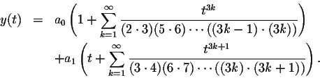
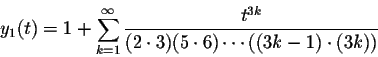
and
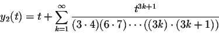
form a fundamental system of solutions for Airy's Differential Equation.
Symplectic difference systems are the first order recurrence systems
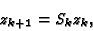 |
(1) |
where
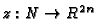
and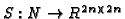
is a symplectic matrix, i. e.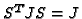
with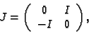
I being the
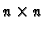
identity matrix. Symplectic difference systems cover a large variety of difference equations and systems, among them as a very special case the second order Sturm-Liouville difference equation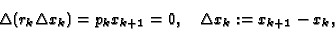 |
(2) |
whose oscillation theory is deeply developed.
Visit Sturmian sequence, Sturm Function
Verhulst
The basic mathematical model based in population studies is that the
population size for one generation is proportional to the size of the previous
generation. This is expressed mathematically by the following equation:
| pt+1 = r pt | (1) |
where:
| t | represents the time period (which could be minutes, weeks, years, etc. depending on the species being considered), |
| pt | represents the population size at time t. The units of time could be hours, days, years, etc., |
| pt+1 | represents the population size at the next time period. Again, it could be the next hour, next day, next year, etc., and |
| r | referred to as the Malthusian factor, is the multiple that determines the growth rate. |
This growth equation can be used in cases where there is truly this
type of growth. For example, when a new species arrives to an island where
there is plentiful of food, perfect conditions for reproduction, and no
predators, one can certainly observe this (almost perfect) type of
growth; although, not forever. That is why other mathematical models were
developed.
Limited growth. The problem with the equation (1) model is that
the population continues to grow unlimited over time. A major contribution
came from Pierre Francois Verhulst, a scientist interested in population
growth. Verhulst was born in 1804 in Brussels, Belgium. He showed in 1846
that the population growth not only depends on the population size but
also on how far this size is from its upper limit.
Let's look at the mathematics behind this.Carrying capacity is the maximum
population size that a given habitat can support. We’ll denote that as
K.
If the population is far below K, it would tend to grow rapidly,
but as it approaches K, the growth would slow down. If the population
size would exceed its upper limit K, the growth would actually be
negative!. In order to model this, Verhulst modified equation (1)
to make the population size proportional to both the previous population
and a new term:
| (K- pt )/K | (2) |
So the equation using this new term and named after Verhulst is:
| pt+1 = r pt (K- pt )/K | (3) |
This equation is also known as a logistic difference equation. Comparing it with equation (1) it is nonlinear in the sense that one can’t simply multiply the previous population by a factor. In this case the population pt on the right of the equation is being multiplied by itself. One of the nice things about this equation is that it is relatively easy to solve and it is also easy to see how it behaves by looking at a chart produced by it. The following chart was produced with K = 1000, r = 1.3, and an initial value p0 of 0.1:
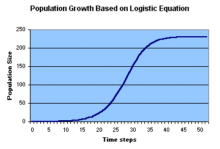
The curve produced by the logistic equation resembles an S. That is
why it is called an S-shaped curve or a Sigmoid. As you can see, when the
population starts to grow, it does go through an exponential growth phase,
but as it gets closer to the carrying capacity (approximately when the
time step reaches 37), the growth slows down and it reaches a stable level.
There are many examples in nature that show that when the environment is
stable the maximum number of individuals in a population fluctuates near
the carrying capacity of the environment. However, if the environment becomes
unstable, the population size can have dramatic changes.
The logistic growth equation is a useful model for demonstrating the
effects of density-dependent mechanisms in population growth. However,
its utility in real populations is limited because the dynamics of populations
are complex and because it is difficult to come up with the real value
for K in a given habitat. In addition, K is not a fixed number
over time; it is always changing depending on many conditions.
Jacobi
In [9] Tom
H. Koornwinder introduced the polynomials Pna,b,M,N(x)
which are orthogonal on the interval [-1,1] with respect to the weight
function
|
|
|
In [3] we proved that for M > 0 the generalized Laguerre polynomials satisfy a unique differential equation of the form
|
|
|||||||||||||||||||
|
|
In [6] we used the inversion formula found in [5] to find differential equations of the form
|
||||||||||||||||||||
|
For a = b = 0, M > 0 and N > 0 the generalized Jacobi polynomials reduce to the Krall polynomials studied by Lance L. Littlejohn in [13]. These Krall polynomials are generalizations of the Legendre type polynomials (a = b = 0 and N = M > 0) found by H.L. Krall in [11] and [12]. See also [10]. In [13] it is shown that the Krall polynomials satisfy a sixth order differential equation of the form (1). For a > -1, b = 0, M > 0 and N = 0 or for a = 0, b > -1, M = 0 and N > 0 the generalized Jacobi polynomials reduce to the Jacobi type polynomials which satisfy a fourth order differential equation of the form (1) ; see also [10], [11] and [12].
We emphasize that the case b = a and N = M is special in the sense that we can also find differential equations of the form
|
(2) |
Dirichlet
Dirichlet made significant contributions to differential
equations. He is well recognized by his work with
series. The Dirichlet series F ( s ) is of the
form
¥
å a n n-s
f
n = 1
where s may be real or complex. F
( s ), the sum of the series, is called the generating
function of a n
. The simplest type of Dirichlet series is the Riemann
zeta function in which a n =1,
for all values of n.
Visit
Dirichlet Divisor Problem , Sierpinski's
Prime Sequence Theorem, Sharing
Problem
Liouville
Aside from Liouville's
numbers, he also made contributions with Sturm to the foundations of
oscillation theory for difference equations. For further knowledge
of his work, scroll to Sturm's contibutions. Another important area
which Liouville is remembered for today is that of transcendental
numbers. He constructed an infinite class of transcendental numbers
using continued fractions. In particular he gave an example of a transcendental
number, the number now named the Liouville
number
0.1100010000000000000000010000..., where there is a 1 in place n! and
0 elsewhere.
We may study constants by means of other constants. Given a real number
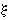
, let R denote the set of all positive real numbers r for which the inequality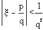
has at most finitely many solutions (p,q), where p and q>0 are integers. Define the Liouville-Roth constant (or irrationality measure)
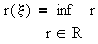
i.e., the critical rate threshold greater than which
is not approximable by rational numbers [1,2]. It's known that
| x is rational | ===> | r(x) = 1 |
| x is algebraic irrational | ===> | r(x) = 2 |
| x is transcedental | ===> | r(x) 2 |
If is a Liouville number, e.g.,
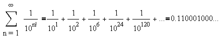
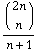
Among other things, the Catalan numbers describe the number of ways
a polygon with n+2 sides can be cut into n triangles, the number of ways
in which
parentheses can be placed in a sequence of numbers to be multiplied,
two at a time; the number of rooted, trivalent trees with n+1 nodes; and
the number of paths of
length 2n through an n-by-n grid that do not rise above the main diagonal.
An example is: 4 sides, 2 ways:
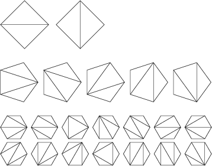
Super
Catalan Number are given by the recurrence relation
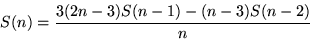
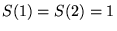
.